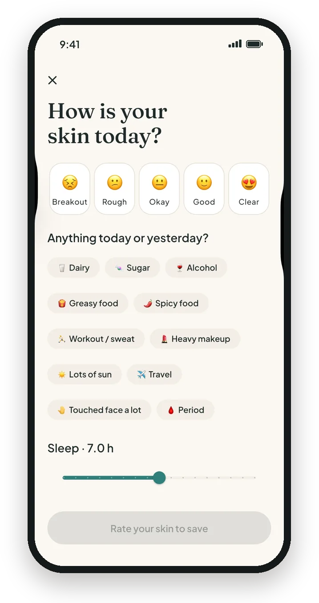
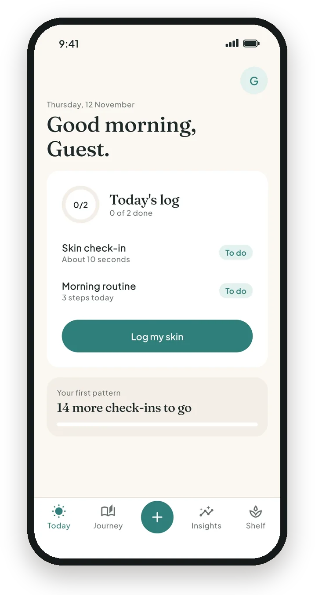
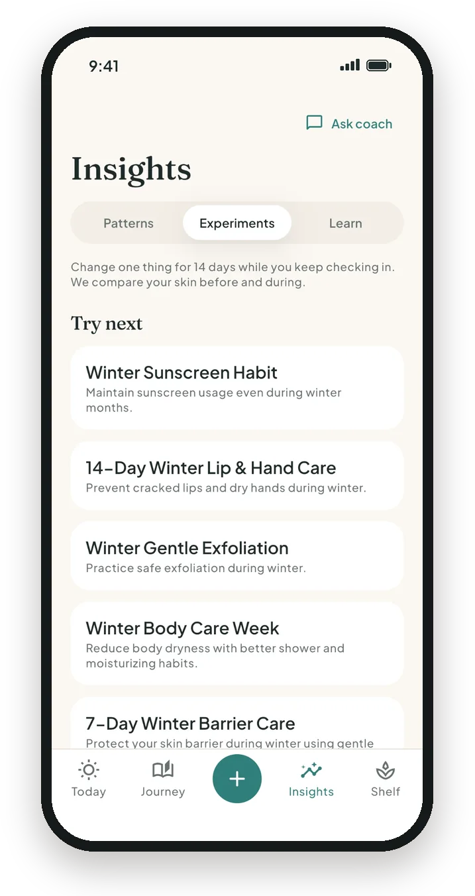
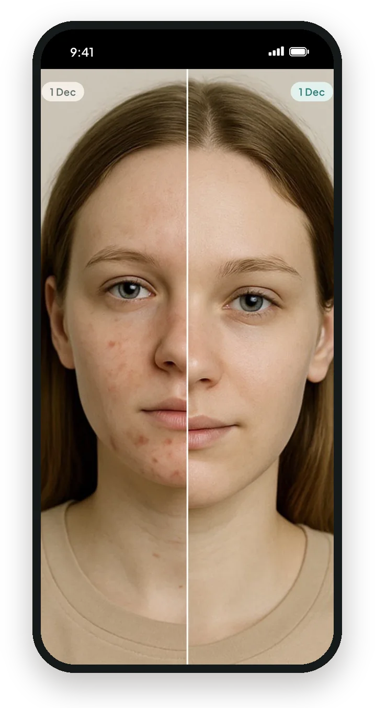
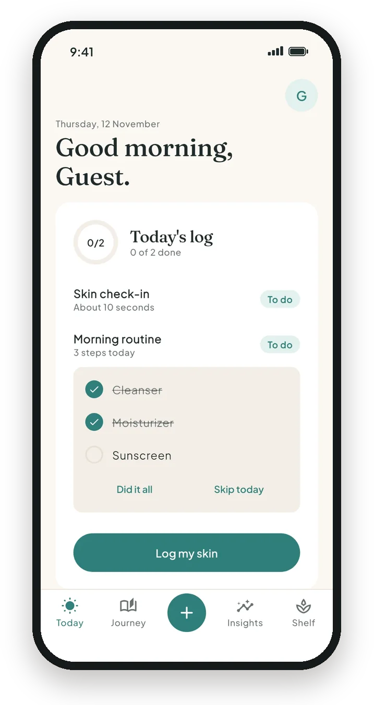
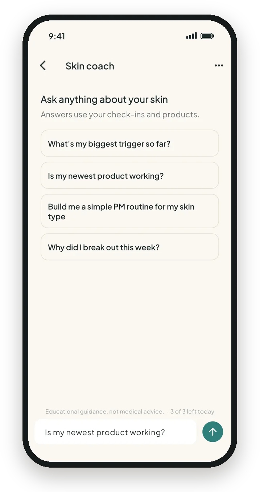

Your skin trigger diary
Find out what's breaking you out.
Skincare Daily is a 10-second daily skin diary. Log your skin, food, sleep and products, and in about two weeks see what actually helps or hurts your skin.
Free to use. Optional Pro with a 7-day free trial on the yearly plan.


How it works
No guesswork, no generic advice. Patterns come from your own log.
1
Log in 10 seconds
Rate your skin, tap what happened today: dairy, sugar, sleep, stress, workout, period, a new product.
2
See your patterns
After about two weeks, Insights shows what tends to come before your good and bad skin days, including delayed effects.
3
Test and confirm
Run a 14-day experiment on a hunch and get a clear before-and-after result.
Daily check-in
Log your skin in 10 seconds
One quick screen a day is all it takes to build a log that actually means something.
- Skin score and where it flared
- Food, sleep, mood, water, period and more
- Your morning and evening routine fill in automatically
Experiments
Test one hunch for 14 days
Wondering if cutting sugar or a new pillowcase helps? Change one thing while you keep checking in.
- Ready-made experiments with daily tasks
- Before-and-during comparison of your skin
- Product verdicts: is this product working?

Photo journey
See real change
Take progress photos with a framing guide so every shot lines up, then slide between before and after.
- Framing guide for consistent photos
- Before-and-after slider
- Photos stay private to your account

Routines
Routines that fit your day
Build morning and evening routines and check steps off right from Today.
- Schedule steps for certain days, like exfoliating twice a week
- Gentle reminders with quiet hours you control
- Mark it all done or skip a day in one tap

AI skin coach
Ask about your skin
Ask questions like "Why was last week worse?" The coach answers using your own check-ins and products.
- Answers based on your log, not generic tips
- Never diagnoses, and suggests a dermatologist when needed
- Off until you turn it on; you can stop sharing any time

Skincare Daily Pro
Free forever. Pro when you want more.
Daily check-ins, photos and your strongest insight are free. Pro is available monthly or yearly, with a 7-day free trial on the yearly plan. Cancel any time in your store account.
- ✓
Every pattern
All the triggers we find, not just the strongest
- ✓
Product verdicts
See if each product is helping or hurting
- ✓
Unlimited experiments and products
Test more than one hunch at a time
- ✓
More coach, no ads
Up to 30 AI coach messages a day and an ad-free diary
Private by default
Your skin log belongs to your account. Never sold, never shared with advertisers.
Your data, your call
Export your data or delete your account any time from Profile.
Not medical advice
A wellness diary, not a diagnosis. Talk to a dermatologist about persistent symptoms.
Start your skin diary today
Ten seconds a day. Two weeks to your first pattern.